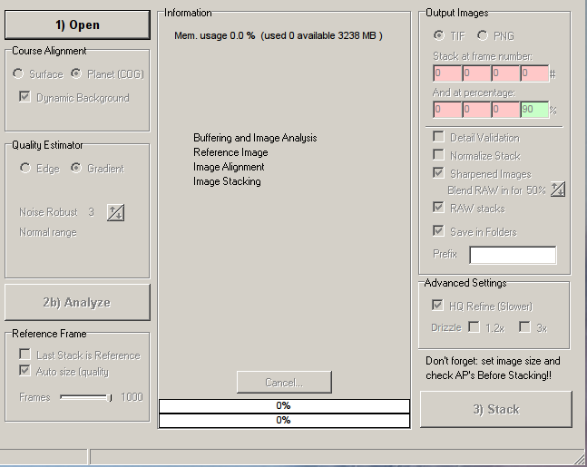
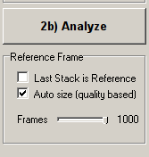
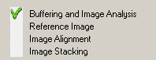
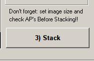
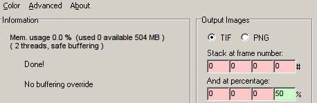

from sikuli.Sikuli import * import subprocess, sys, os, os.path, shutil setAutoWaitTimeout(60) myScriptPath = "/home/miphilli/Dropbox/5-Permanent/Sikuli/Linux/Astro/Planetary/v91" if not myScriptPath in sys.path: sys.path.append(myScriptPath) # Major rework on 20111128 # # Define STATIC variables # NinoxCrop=450 TempWorkingDir = os.path.join(r'/Astronomy/Temp/irisscratch-2000-01-01/') # set src $DATE variables for coriander captures os.popen("ls /Astronomy/Transit/1-Corianders/ > /Astronomy/Sorted/2-Scratch/MAPninox-DATE.txt") # set src $TIME variables for coriander captures os.popen("ls /Astronomy/Transit/1-Corianders/20*/ | grep [0-9] > /Astronomy/Sorted/2-Scratch/MAPninox-TIME.txt") # set src PrefTime variables for parsing out cam values #os.popen("ls /Astronomy/Transit/1-Corianders/20*/preferences/ > /Astronomy/Sorted/2-Scratch/MAPpref-TIME.txt") #TempExpiringDir = os.path.join(r'/Astronomy/Sorted/2-Scratch/', DATE, TIME) # # # Verify static directory structures and other static things # #os.popen("mkdir -p " + TempWorkingDir) os.popen("mkdir -p /Astronomy/Sorted/2-Scratch") os.popen("mkdir -p /Astronomy/Sorted/4-Temp\ Stacked/Solar\ System/") os.popen("mkdir -p /Astronomy/Save/ProcessingTimes") os.popen("chmod u+x -R /home/miphilli/Dropbox/5-Permanent/BASH/*") #os.popen("rm -rf /Astronomy/Sorted/2-Scratch/MAPninox-????.txt*") #os.popen("rm -rf /Astronomy/Sorted/2-Scratch/MAPpref-TIME.txt") # # Read captures from Transit folder # DATEFILE = open('/Astronomy/Sorted/2-Scratch/MAPninox-DATE.txt', "r") TIMEFILE = open('/Astronomy/Sorted/2-Scratch/MAPninox-TIME.txt', "r") # # Open DATE for varaible # for DATE in DATEFILE: DATE.rstrip('\r\n') # # Open TIME for varaible and finalize VARIABLE variables # for TIME in TIMEFILE: TIME.rstrip('\r\n') #Sanity log print ("This is the Date:" + DATE.rstrip('\r\n') + ", and this is the Time:" + TIME.rstrip('\r\n')) # #Dynamic variables such as 2-Scratch, 4-Temp Stacked # ScratchDir = os.path.join(r'/Astronomy/Sorted/2-Scratch/', DATE.rstrip('\r\n'), TIME.rstrip('\r\n')) ScratchDirR = os.path.join(r'/Astronomy/Sorted/2-Scratch/', DATE.rstrip('\r\n'), TIME.rstrip('\r\n'), 'Rtop2000') ScratchDirG = os.path.join(r'/Astronomy/Sorted/2-Scratch/', DATE.rstrip('\r\n'), TIME.rstrip('\r\n'), 'Gtop2000') ScratchDirB = os.path.join(r'/Astronomy/Sorted/2-Scratch/', DATE.rstrip('\r\n'), TIME.rstrip('\r\n'), 'Btop2000') StackedDir = os.path.join(r'/Astronomy/Sorted/4-Temp Stacked/Solar System/', DATE.rstrip('\r\n'), TIME.rstrip('\r\n'), 'v951') StackedDirAll = os.path.join(r'/Astronomy/Sorted/4-Temp Stacked/Solar System/', DATE.rstrip('\r\n'), 'all') D = int(DATE.rstrip('\r\n')) Dcalc = (D + 200) print ("Expires " + str(Dcalc)) ExpiryDirCoriander = os.path.join(r'/Astronomy/Temp/Corianders-Expiring--', str(Dcalc), DATE.rstrip('\r\n'), 'Corianders') ExpiryDirNinoxed = os.path.join(r'/Astronomy/Temp/Corianders-Expiring--', str(Dcalc), DATE.rstrip('\r\n'), 'Ninoxed') print ExpiryDirCoriander #Log times os.popen("touch /Astronomy/Save/ProcessingTimes/" + DATE.rstrip('\r\n') + ".txt") os.system("echo Time = " + TIME.rstrip('\r\n') + " >> /Astronomy/Save/ProcessingTimes/" + DATE.rstrip('\r\n') + ".txt") os.system("echo Ninox started: >> /Astronomy/Save/ProcessingTimes/" + DATE.rstrip('\r\n') + ".txt") os.system(" date >> /Astronomy/Save/ProcessingTimes/" + DATE.rstrip('\r\n') + ".txt") # Tracer file os.popen("touch " + ScratchDir + "/" + DATE.rstrip('\r\n') + "-" + TIME.rstrip('\r\n') + ".txt") #Make Directories try: os.makedirs(ScratchDir) except os.error: print "Directory already exists, moving on..."#print str(DATELIST) try: os.makedirs(ScratchDirR) except os.error: print "Directory already exists, moving on..."#print str(DATELIST) try: os.makedirs(ScratchDirG) except os.error: print "Directory already exists, moving on..."#print str(DATELIST) try: os.makedirs(ScratchDirB) except os.error: print "Directory already exists, moving on..."#print str(DATELIST) try: os.makedirs(StackedDir) except os.error: print "Directory already exists, moving on..."#print str(DATELIST) try: os.makedirs(StackedDirAll) except os.error: print "Directory already exists, moving on..."#print str(DATELIST) try: os.makedirs(TempWorkingDir) except os.error: print "Directory already exists, moving on..."#print str(DATELIST) try: os.makedirs(ExpiryDirCoriander) except os.error: print "Directory already exists, moving on..."#print str(DATELIST) try: os.makedirs(ExpiryDirNinoxed) except os.error: print "Directory already exists, moving on..."#print str(DATELIST) popup("test") # ## NINOX # # NINOX OPTIONS # MAPNinox=("/Astronomy/5-Permanent/Software/ninox/ninox -display -cut=" + str(NinoxCrop) + " -qtrim -qestimator -qrenumber -resample=2/1 -outdir=/Astronomy/Sorted/2-Scratch/" + DATE.rstrip('\r\n') + "/" + TIME.rstrip('\r\n') + " /Astronomy/Transit/1-Corianders/" + DATE.rstrip('\r\n') + "/" + TIME.rstrip('\r\n')) # gnome-terminal --title=NINOX --geometry=50x12 -x /home/miphilli/Dropbox/5-Permanent/BASH/Astronomy/Planetary/v9/ninoxloop2x.sh # MAPNinoxCMD = ("gnome-terminal --title=NINOX --geometry=50x12 -x /Astronomy/5-Permanent/Software/ninox/ninox -display -cut=150 -qestimator -qrenumber -resample=2/1 -outdir=/Astronomy/Sorted/2-Scratch/" + DATE.rstrip('\r\n') + "/" + TIME.rstrip('\r\n') + " /Astronomy/Transit/1-Corianders/" + DATE.rstrip('\r\n') + "/" + TIME.rstrip('\r\n')) # # os.system(MAPNinox) # sleep(3) os.system("echo Ninox ended: >> /Astronomy/Save/ProcessingTimes/" + DATE.rstrip('\r\n') + ".txt") os.system(" date >> /Astronomy/Save/ProcessingTimes/" + DATE.rstrip('\r\n') + ".txt") # #Move Corianders/Originals to temp shutil.move("/Astronomy/Transit/1-Corianders/" + DATE.rstrip('\r\n') + "/" + TIME.rstrip('\r\n'), ExpiryDirCoriander + "/" + TIME.rstrip('\r\n')) #Use old bash method to sort cropped files to Xtop2000 ## shutil.move("/Astronomy/Sorted/2-Scratch/" + DATE.rstrip('\r\n') + "/" + TIME.rstrip('\r\n') + "/2/q0000[0-9]-?.fit", "/Astronomy/Sorted/2-Scratch/" + DATE.rstrip('\r\n') + "/" + TIME.rstrip('\r\n') + "/Rtop2000") os.system("/home/miphilli/Dropbox/5-Permanent/BASH/Astronomy/Planetary/v9/Ntop2kmove.sh " + DATE.rstrip('\r\n') + " " + TIME.rstrip('\r\n')) #Move/Sort 'garbage' leftovers files to ExpiryDirNinoxed shutil.move("/Astronomy/Sorted/2-Scratch/" + DATE.rstrip('\r\n') + "/" + TIME.rstrip('\r\n') + "/2/", ExpiryDirNinoxed + "/" + TIME.rstrip('\r\n') + "/2/") shutil.move("/Astronomy/Sorted/2-Scratch/" + DATE.rstrip('\r\n') + "/" + TIME.rstrip('\r\n') + "/3/", ExpiryDirNinoxed + "/" + TIME.rstrip('\r\n') + "/3/") shutil.move("/Astronomy/Sorted/2-Scratch/" + DATE.rstrip('\r\n') + "/" + TIME.rstrip('\r\n') + "/4/", ExpiryDirNinoxed + "/" + TIME.rstrip('\r\n') + "/4/") #Temp move to Iristemp for fixed location of AS2/AI/GIMP shutil.move(ScratchDir, TempWorkingDir) # popup("CHECKPOINT") # # Run AS2 # # import AS2 #Define Watchdog variables CMD = "top -b -n 1 | gawk '/Stakkert/ {print $9}'" test = True cpuMax = 2 #Verify cleanup of workspace os.popen("killall workrave") os.popen("killall cairo-dock") sleep(10) # # BATCH all Xtop2000 # os.system("echo AS2 started " + TIME.rstrip('\r\n') + " >> /Astronomy/Save/ProcessingTimes/" + DATE.rstrip('\r\n') + ".txt") os.system(" date >> /Astronomy/Save/ProcessingTimes/" + DATE.rstrip('\r\n') + ".txt") os.system("nautilus " + TempWorkingDir) os.popen("/home/miphilli/Documents/Dropbox/5-Permanent/Shortcuts/PlanetaryProcessing/v95/88-AutoStakkert.exe&") wait(Pattern().similar(0.59)) switchApp("irisscratch") wait(Pattern().similar(0.80)) switchApp("irisscratch") sleep(1) type("s",KEY_CTRL) sleep(5) paste('?top2000') sleep(5) type(Key.ENTER) sleep(5) dragDrop(Pattern().similar(0.98), ) sleep(5) click(Pattern().targetOffset(0,-58)) while True: AS2CPU = os.popen(CMD).readlines() cpu = float(AS2CPU[0]) if test: print cpu if cpu < cpuMax : break wait(5) print(AS2CPU) switchApp("Stakkert") wait() sleep(2) click(Pattern().similar(0.00).targetOffset(-18,16)) sleep(3) while True: AS2CPU = os.popen(CMD).readlines() cpu = float(AS2CPU[0]) if test: print cpu if cpu < cpuMax : break wait(5) print(AS2CPU) os.system("echo AS2 end: >> /Astronomy/Save/ProcessingTimes/" + DATE.rstrip('\r\n') + ".txt") os.system(" date >> /Astronomy/Save/ProcessingTimes/" + DATE.rstrip('\r\n') + ".txt") click(Pattern().similar(0.00).targetOffset(212,-88)) switchApp("irisscratch") sleep(1) type(" ",KEY_ALT) sleep(1) type("c") # # Move ninox src to TEMParchives # shutil.move(TempWorkingDir + "?top2000", TEMParchive) # # Move goods to 4-Temp Stack # shutil.move(TempWorkingDir, StackedDir) # # #popup("DONE") #END